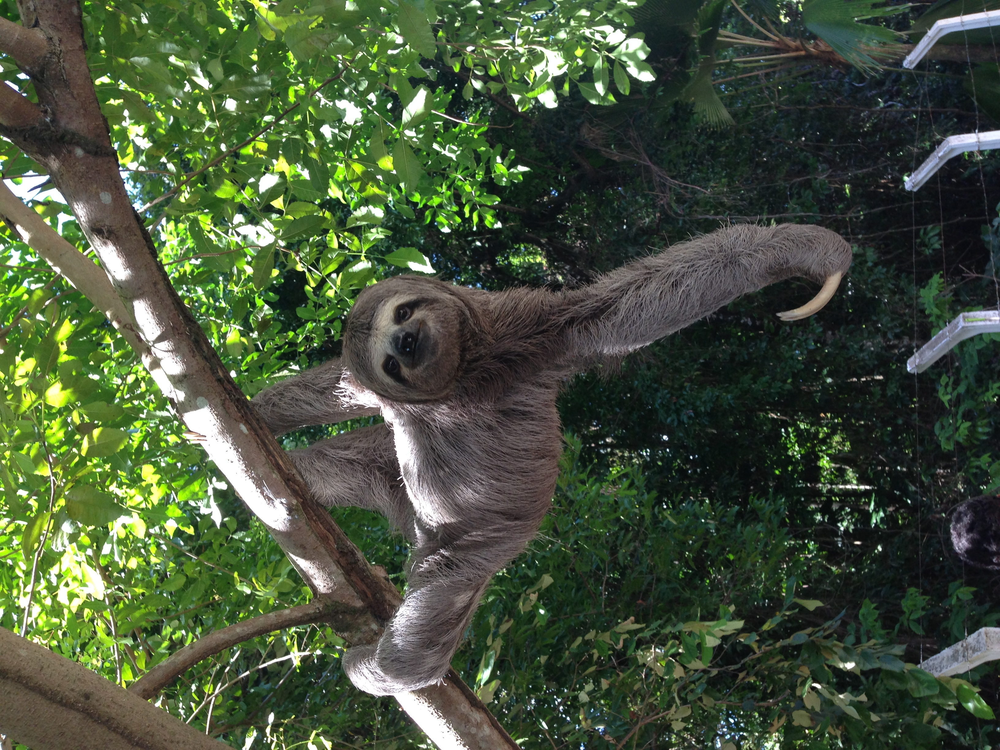
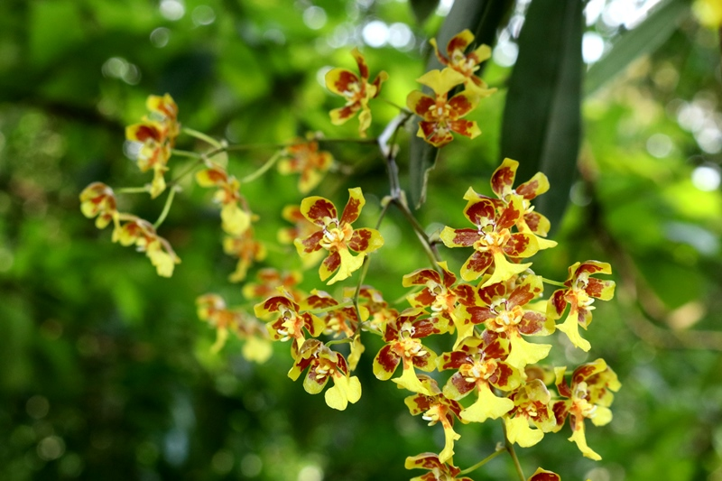

Fauna e Flora
A riqueza natural de Teresópolis.
Fauna

Bicho-Preguiça
Espécie nativa da Mata Atlântica. Costuma habitar as florestas e áreas montanhosas, como o parque nacional.

Tucano-toco
Facilmente reconhecido por seu enorme bico colorido, é uma das aves mais espetaculares da região.
Flora

Orquídeas
Uma variedade imensa de orquídeas de diferentes cores e formas adornam as árvores locais.

Bromélias
Essas plantas acumulam água em suas folhas, criando pequenos ecossistemas para insetos e anfíbios.